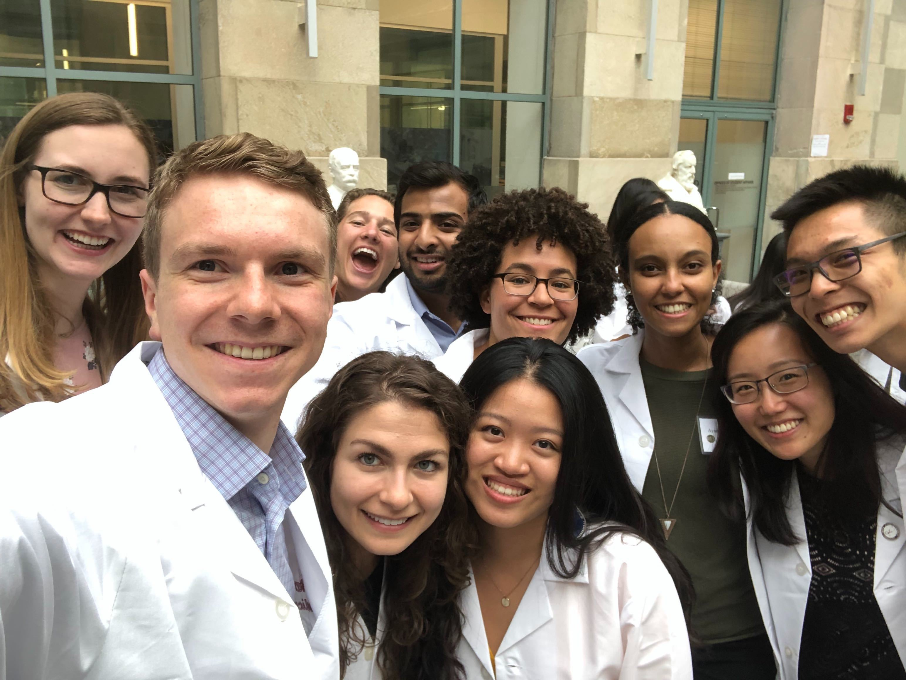

Medicine
I am broadly interested in mental and neurological health, and in the patient-centered development of new technologies that improve access to care and health outcomes. Through both medical care and research, I hope to help enable patients to live their best lives by listening carefully to each patient's story and making it the focal point of personalized medical care and empathetic translational research.